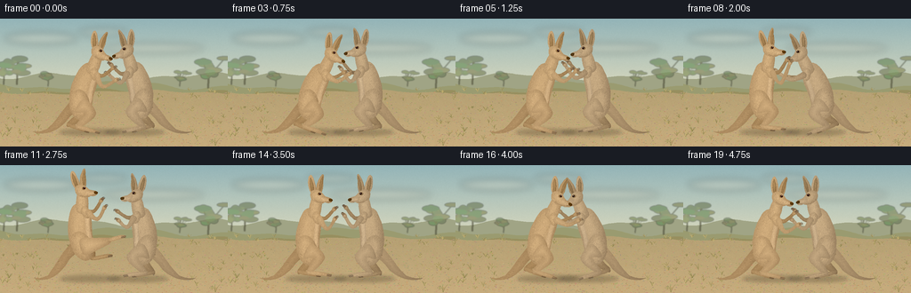
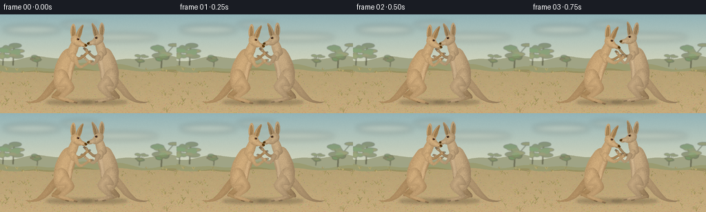

CODING AGENTS AS PIXEL WORLD MODELS
traex/GPT-6.1-Sol · instance_preservation_0009
点击播放 · 原生 RGB 像素
逐轮保存的候选
回放视频、检查图与代码变化。
每份候选均可单独播放。实际图片检查记录在下方工具轨迹中。
候选 01播放与检查图
点击播放 · 原生 RGB 像素


展开代码变化
--- 上一保存版本
+++ 本次保存版本
@@ -0,0 +1,295 @@
+from pathlib import Path
+import math, json
+import numpy as np
+from PIL import Image, ImageDraw, ImageFilter
+from scipy.ndimage import distance_transform_edt, gaussian_filter
+from artifact_io import save
+
+ROOT=Path(__file__).resolve().parent
+SPEC=json.loads((ROOT/'task_spec.json').read_text())
+W,H=SPEC['width'],SPEC['height']
+S=3
+rng=np.random.default_rng(173)
+
+# All geometry and textures are authored mathematically, without source images.
+def bezier(start, curves, n=16):
+ out=[start]; p=np.array(start,float)
+ for c1,c2,end in curves:
+ a,b,q=np.array(c1),np.array(c2),np.array(end)
+ for t in np.linspace(0,1,n+1)[1:]:
+ out.append(tuple((1-t)**3*p+3*(1-t)**2*t*a+3*(1-t)*t*t*b+t**3*q))
+ p=q
+ return out
+
+def ellipse(cx,cy,rx,ry,angle=0,n=70):
+ c,s=math.cos(angle),math.sin(angle)
+ return [(cx+rx*math.cos(t)*c-ry*math.sin(t)*s,cy+rx*math.cos(t)*s+ry*math.sin(t)*c) for t in np.linspace(0,2*math.pi,n)]
+
+def drawline(im,pts,col,width):
+ ImageDraw.Draw(im).line([(round(x*S),round(y*S)) for x,y in pts],fill=col,width=max(1,round(width*S)))
+
+def shaded(im,pts,base,seed,fur=0,flow=(0,1),strength=1):
+ # Small independent surface patches with rounded, softly lit volume.
+ xs,ys=zip(*pts)
+ x0=max(0,int(min(xs)*S)-3);y0=max(0,int(min(ys)*S)-3)
+ x1=min(W*S,int(max(xs)*S)+4);y1=min(H*S,int(max(ys)*S)+4)
+ if x1<=x0 or y1<=y0:return
+ mask=Image.new('L',(x1-x0,y1-y0),0)
+ md=ImageDraw.Draw(mask)
+ md.polygon([(x*S-x0,y*S-y0) for x,y in pts],fill=255)
+ m=np.asarray(mask)>0
+ dist=distance_transform_edt(m)
+ yy,xx=np.mgrid[0:y1-y0,0:x1-x0]
+ u=xx/max(x1-x0-1,1); v=yy/max(y1-y0-1,1)
+ rad=np.clip(dist/(min(x1-x0,y1-y0)*.28+1),0,1)
+ rr=np.random.default_rng(seed)
+ noise=gaussian_filter(rr.normal(0,1,m.shape),.5)
+ shade=strength*(-23*(1-rad)+19*(1-u)-11*v+10*np.sin(np.pi*u))
+ arr=np.clip(np.array(base)[None,None,:]+shade[:,:,None]*np.array([1,.92,.75])+noise[:,:,None]*3,0,255).astype('uint8')
+ patch=Image.fromarray(arr)
+ if fur:
+ fd=ImageDraw.Draw(patch)
+ for j in range(fur):
+ x=int(rr.uniform(0,x1-x0));y=int(rr.uniform(0,y1-y0))
+ if not m[y,x] or dist[y,x]<2:continue
+ length=rr.uniform(.45,1.5)*S
+ fx,fy=flow
+ dx=(fx+rr.normal(0,.16))*length;dy=(fy+rr.normal(0,.16))*length
+ bright=rr.choice([-1,1])*rr.uniform(7,23)
+ co=tuple(np.clip(arr[y,x].astype(float)+bright*np.array([1,.9,.7]),0,255).astype(int))
+ fd.line((x,y,x+dx,y+dy),fill=co,width=1)
+ im.paste(patch,(x0,y0),mask)
+
+def background():
+ yy,xx=np.mgrid[0:H*S,0:W*S]; y=yy/S
+ sky=np.zeros((H*S,W*S,3))
+ top=np.array([147,180,184]);low=np.array([228,222,190])
+ mix=np.clip(y/92,0,1)
+ sky=top[None,None,:]*(1-mix[:,:,None])+low[None,None,:]*mix[:,:,None]
+ noise=gaussian_filter(rng.normal(size=(H*S,W*S)),1)
+ sky+=noise[:,:,None]*2.4
+ im=Image.fromarray(np.uint8(np.clip(sky,0,255)))
+ d=ImageDraw.Draw(im)
+ # Soft clouds and atmospheric ridges.
+ clouds=Image.new('RGBA',im.size)
+ cd=ImageDraw.Draw(clouds)
+ for cx,cy,rx,ry in [(46,22,41,6),(172,33,57,5),(116,15,28,4)]:
+ cd.ellipse(((cx-rx)*S,(cy-ry)*S,(cx+rx)*S,(cy+ry)*S),fill=(248,239,213,65))
+ im=Image.alpha_composite(im.convert('RGBA'),clouds.filter(ImageFilter.GaussianBlur(4*S))).convert('RGB')
+ d=ImageDraw.Draw(im)
+ for level,color,amp in [(65,(160,164,133),3),(75,(154,155,112),4),(82,(151,143,95),2)]:
+ line=[(x,level+math.sin(x*.037+level)*amp+math.sin(x*.097)*1.7) for x in range(-5,262,3)]
+ d.polygon([(x*S,y*S) for x,y in line]+[(W*S,H*S),(0,H*S)],fill=color)
+ # Out-of-focus eucalyptus trees, deliberately peripheral to the fighters.
+ trees=Image.new('RGBA',im.size); td=ImageDraw.Draw(trees)
+ for tx,ty,scale in [(19,74,.75),(234,78,.8),(54,76,.38),(202,76,.4),(4,74,.65)]:
+ td.line((tx*S,ty*S,(tx+1)*S,(ty-38*scale)*S),fill=(108,106,73,210),width=max(1,int(2.0*scale*S)))
+ for j in range(12):
+ px=tx+rng.normal(0,8)*scale;py=ty-rng.uniform(16,42)*scale
+ td.line((tx*S,(ty-15*scale)*S,px*S,py*S),fill=(116,119,80,190),width=max(1,int(scale*S)))
+ rx=rng.uniform(5,13)*scale; ry=rng.uniform(2.2,5)*scale
+ td.ellipse(((px-rx)*S,(py-ry)*S,(px+rx)*S,(py+ry)*S),fill=(int(rng.integers(101,137)),int(rng.integers(121,146)),89,170))
+ im=Image.alpha_composite(im.convert('RGBA'),trees.filter(ImageFilter.GaussianBlur(.6*S))).convert('RGB')
+ # Warm sandy clearing with irregular earth grain.
+ ground=Image.new('L',im.size); gd=ImageDraw.Draw(ground)
+ edge=[(x*S,(83+math.sin(x*.029)*2+math.sin(x*.1))*S) for x in range(0,257,2)]
+ gd.polygon(edge+[(W*S,H*S),(0,H*S)],fill=255)
+ earth=np.zeros((H*S,W*S,3))
+ g=np.clip((y-83)/61,0,1)
+ earth[:]=np.array([182,161,116])[None,None,:]*(1-g[:,:,None])+np.array([199,172,125])[None,None,:]*g[:,:,None]
+ tex=gaussian_filter(rng.normal(0,1,(H*S,W*S)),.5)*2.5+gaussian_filter(rng.normal(0,1,(H*S,W*S)),5)*10
+ earth+=tex[:,:,None]
+ im.paste(Image.fromarray(np.uint8(np.clip(earth,0,255))),(0,0),ground)
+ d=ImageDraw.Draw(im)
+ for j in range(2600):
+ x=rng.uniform(0,W); yy=rng.uniform(82,H); size=rng.uniform(.12,.7)*(yy/144)
+ color=(int(rng.integers(155,209)),int(rng.integers(135,182)),int(rng.integers(93,136)))
+ d.ellipse((x*S,yy*S,(x+size*2)*S,(yy+size*.45)*S),fill=color)
+ for j in range(120):
+ x=rng.uniform(0,W); yy=rng.uniform(81,142)
+ if 51<x<213 and yy>93:continue
+ grass(im,x,yy,rng.uniform(2,6)*(yy/144),j)
+ return im
+
+def grass(im,x,y,ht,seed):
+ rr=np.random.default_rng(seed+902);d=ImageDraw.Draw(im)
+ for j in range(9):
+ dx=rr.uniform(-ht,ht); rise=rr.uniform(.6,1.5)*ht
+ co=tuple(map(int,rr.choice([(137,126,75),(177,160,101),(198,180,117),(155,142,89)])))
+ pts=bezier((x,y),[((x+dx*.15,y-rise*.45),(x+dx*.65,y-rise*.9),(x+dx,y-rise))],8)
+ drawline(im,pts,co,.3)
+
+BG=background()
+
+# Joint trajectories: hip, body lean, muzzle reaction, near and far arms,
+# and powerful hind-limb joints. The two kangaroos always retain their identities.
+baseL=dict(x=91,y=92,a=6,head=0,el=(23,-18),paw=(37,-27),fel=(21,-30),fpaw=(32,-40),knee=(12,14),ank=(-1,30),toe=(24,34),fknee=(3,15),fank=(-11,29),ftoe=(12,34))
+baseR=dict(x=159,y=91,a=3,head=0,el=(23,-20),paw=(36,-31),fel=(21,-30),fpaw=(32,-41),knee=(12,14),ank=(-1,31),toe=(23,35),fknee=(3,15),fank=(-11,30),ftoe=(12,35))
+
+def pose(base,**kw):
+ p=base.copy();p.update(kw);return p
+
+keysL=[(0,pose(baseL)),(2,pose(baseL,a=10,paw=(31,-32),el=(22,-22))),
+ (4,pose(baseL,x=94,a=12,el=(31,-32),paw=(44,-43),fpaw=(32,-37))),
+ (6,pose(baseL,x=91,a=1,paw=(34,-33),head=-5)),
+ (8,pose(baseL,x=88,a=-4,head=-8,paw=(35,-40),fpaw=(32,-44))),
+ (10,pose(baseL,x=90,y=87,a=-11,paw=(32,-35),knee=(16,10),ank=(22,19),toe=(38,17))),
+ (12,pose(baseL,x=94,y=85,a=-16,head=3,el=(23,-23),paw=(35,-27),knee=(19,3),ank=(41,-7),toe=(59,-6),fknee=(10,12),fank=(26,15),ftoe=(46,12))),
+ (14,pose(baseL,x=90,y=91,a=-3,paw=(32,-29))),
+ (16,pose(baseL,x=94,y=90,a=8,el=(29,-27),paw=(40,-34),fpaw=(36,-40))),
+ (18,pose(baseL,x=90,a=-1,head=-5,paw=(36,-36),fpaw=(33,-43))),
+ (19,pose(baseL,x=91,a=3))]
+keysR=[(0,pose(baseR)),(2,pose(baseR,x=158,a=4)),
+ (4,pose(baseR,x=163,a=-6,head=-7,paw=(31,-37),fpaw=(33,-43))),
+ (6,pose(baseR,x=159,a=8,el=(29,-30),paw=(44,-43))),
+ (8,pose(baseR,x=156,a=11,el=(31,-29),paw=(45,-42),fpaw=(32,-32))),
+ (10,pose(baseR,x=159,a=4,paw=(33,-32))),
+ (12,pose(baseR,x=167,y=90,a=-11,head=-8,el=(20,-19),paw=(30,-21),fpaw=(34,-32),knee=(15,15),ank=(-4,31),toe=(20,35))),
+ (14,pose(baseR,x=162,a=-4,paw=(33,-32))),
+ (16,pose(baseR,x=157,y=90,a=8,el=(28,-29),paw=(41,-36),fpaw=(34,-43))),
+ (18,pose(baseR,x=157,a=9,el=(30,-33),paw=(44,-44))),
+ (19,pose(baseR,x=159,a=2))]
+
+def interp(keys,f):
+ for (t0,p),(t1,q) in zip(keys,keys[1:]):
+ if t0<=f<=t1:
+ u=(f-t0)/(t1-t0);u=u*u*(3-2*u)
+ out={}
+ for k in p:
+ if isinstance(p[k],tuple):out[k]=tuple(np.array(p[k])*(1-u)+np.array(q[k])*u)
+ else:out[k]=p[k]*(1-u)+q[k]*u
+ return out
+ return keys[-1][1]
+
+class Roo:
+ def __init__(self,im,p,facing,identity,frame):
+ self.im=im;self.p=p;self.f=facing;self.id=identity;self.frame=frame
+ a=math.radians(p['a']);self.c=math.cos(a);self.s=math.sin(a)
+ self.base=np.array([191,157,112]) if identity==0 else np.array([181,154,117])
+ def tr(self,pt,rotate=True):
+ x,y=pt
+ if rotate:x,y=self.c*x-self.s*y,self.s*x+self.c*y
+ return self.p['x']+self.f*x,self.p['y']+y
+ def shape(self,pts,delta=0,seed=0,fur=100,flow=(0,1),rot=True):
+ shaded(self.im,[self.tr(v,rot) for v in pts],np.clip(self.base+delta,0,255),self.id*1000+seed,fur,(flow[0]*self.f,flow[1]))
+ def curve(self,start,cs,delta=0,seed=0,fur=100,flow=(0,1),rot=True):
+ self.shape(bezier(start,cs),delta,seed,fur,flow,rot)
+ def line(self,pts,col,width=.5,rotate=True):
+ drawline(self.im,[self.tr(pt,rotate) for pt in pts],col,width)
+ def limb(self,pts,widths,delta=0,seed=0):
+ # A tapered smooth swept volume, not a straight stick.
+ pp=np.array(pts,float); left=[];right=[]
+ for j in range(len(pp)):
+ tangent=pp[min(j+1,len(pp)-1)]-pp[max(0,j-1)]
+ norm=np.array([-tangent[1],tangent[0]])/(np.linalg.norm(tangent)+1e-8)
+ left.append(tuple(pp[j]+norm*widths[j]));right.append(tuple(pp[j]-norm*widths[j]))
+ outline=[]
+ # Cardinal spline around the outline retains an anatomical soft contour.
+ ctrl=np.array(left+right[::-1]);n=len(ctrl)
+ for j in range(n):
+ p0,p1,p2,p3=ctrl[(j-1)%n],ctrl[j],ctrl[(j+1)%n],ctrl[(j+2)%n]
+ for t in np.linspace(0,1,9,endpoint=False):
+ outline.append(tuple(.5*((2*p1)+(-p0+p2)*t+(2*p0-5*p1+4*p2-p3)*t*t+(-p0+3*p1-3*p2+p3)*t**3)))
+ self.shape(outline,delta,seed,180)
+ def foot(self,ank,toe,delta,seed):
+ ax,ay=ank;tx,ty=toe
+ dx=tx-ax;dy=ty-ay
+ pts=bezier((ax-2,ay-2),[((ax+dx*.35,ay+dy*.35-3),(tx-3,ty-3),(tx,ty-1)),((tx+2,ty),(tx+1,ty+1.5),(tx-2,ty+1.6)),((ax+dx*.3,ay+dy*.3+2),(ax-3,ay+3),(ax-2,ay-2))])
+ self.shape(pts,delta,seed,140,flow=(1,.1))
+ for j in range(3):
+ self.line([(tx-4-j*.3,ty-1+j*.8),(tx+1-j*.4,ty-.2+j*.8)],(80,65,48),.35)
+ def hand(self,paw,el,far=False):
+ wx,wy=paw;ex,ey=el
+ vx,vy=wx-ex,wy-ey;n=math.hypot(vx,vy);vx/=n;vy/=n
+ nx,ny=-vy,vx
+ self.shape(ellipse(wx,wy,3.2,2.2,math.atan2(vy,vx)), -15 if far else -4,81 if far else 82,50,flow=(vx,vy))
+ for j in range(4):
+ ofs=(j-1.5)*.75
+ root=(wx+vx*1+nx*ofs,wy+vy*1+ny*ofs)
+ tip=(wx+vx*(4.6-abs(j-1.5)*.5)+nx*(ofs+.5),wy+vy*(4.6-abs(j-1.5)*.5)+ny*(ofs+.5))
+ self.line([root,tip],(133,106,74) if not far else (119,94,68),.7)
+ self.line([tip,(tip[0]+vx*.9,tip[1]+vy*.9+.4)],(64,56,46),.4)
+ def render(self):
+ p=self.p
+ # Broad, muscular tail tapering to a grounded point behind each animal.
+ # The ground contact remains fixed even when the body rocks back for a kick.
+ endx=(-54 if self.id==0 else -57);endy=127-p['y']
+ self.curve((-10,-1),[((-21,11),(-28,24),(-38,endy-3)),((-46,endy+1),(endx+3,endy+1),(endx,endy)),((endx+8,endy+5),(-27,endy+3),(-15,21)),((-7,13),(0,10),(-10,-1))],-9,10,450,flow=(-1,.4),rot=False)
+ # Far hind leg and long toes, visible behind the near haunch.
+ self.limb([(-5,4),p['fknee'],p['fank']],[9,6,2.4],-20,20)
+ self.foot(p['fank'],p['ftoe'],-17,21)
+ # Far arm reaches around the other animal during boxing.
+ self.limb([(11,-33),p['fel'],p['fpaw']],[3.1,2.0,1.35],-21,25)
+ self.hand(p['fpaw'],p['fel'],True)
+ # Pear-shaped torso: small chest, broad belly and powerful haunches.
+ self.curve((-9,10),[((-17,-1),(-13,-21),(-4,-37)),((1,-45),(9,-45),(15,-35)),((20,-23),(12,-12),(13,4)),((13,15),(-1,20),(-9,10))],0,30,900)
+ # Long narrow sloping neck joins the small head to the chest.
+ self.curve((2,-35),[((3,-43),(7,-53),(9,-57)),((12,-63),(18,-59),(19,-54)),((18,-45),(18,-41),(15,-33)),((11,-29),(5,-29),(2,-35))],4,33,330,flow=(.2,1))
+ # Pale chest fur, softly contoured rather than a hard colored bib.
+ self.curve((14,-32),[((17,-26),(11,-18),(12,-5)),((13,4),(7,8),(5,3)),((7,-8),(9,-21),(10,-28)),((11,-32),(12,-34),(14,-32))],18,34,260)
+ # Massive near thigh, tapering to an angular hock.
+ k=p['knee'];a=p['ank']
+ self.shape(ellipse(-1,5,11.4,17.4,-.22),-1,40,660,flow=(.4,1))
+ self.limb([(-1,6),k,a],[9,6.3,2.5],1,41)
+ self.foot(a,p['toe'],0,42)
+ # The shoulder rolls naturally with the active arm.
+ self.shape(ellipse(12,-31,4.8,7.2,-.25),1,50,180)
+ self.limb([(14,-31),p['el'],p['paw']],[3.3,2.15,1.5],3,51)
+ self.hand(p['paw'],p['el'])
+ self.head()
+ def head(self):
+ h=math.radians(self.p['head']);ch,sh=math.cos(h),math.sin(h)
+ def hpt(v):
+ x,y=v;return (12+ch*(x-12)-sh*(y+56),-56+sh*(x-12)+ch*(y+56))
+ def shape(pts,delta,seed,fur=100,flow=(0,1)):
+ self.shape([hpt(v) for v in pts],delta,seed,fur,flow)
+ def path(start,cs,delta,seed,fur=100):shape(bezier(start,cs),delta,seed,fur)
+ # Far ear, then the distinct long near ear with an inset darker channel.
+ path((14,-59),[((11,-64),(15,-73),(19,-78)),((22,-82),(23,-78),(21,-73)),((21,-66),(20,-62),(18,-58)),((16,-56),(15,-57),(14,-59))],-10,61,100)
+ path((16,-63),[((16,-69),(19,-76),(21,-78)),((22,-76),(20,-67),(18,-62)),((17,-60),(16,-61),(16,-63))],-35,62,60)
+ path((8,-58),[((4,-62),(3,-71),(5,-77)),((7,-82),(10,-79),(11,-73)),((13,-67),(13,-62),(12,-58)),((11,-56),(9,-56),(8,-58))],5,63,130)
+ path((7,-62),[((6,-66),(5,-74),(7,-77)),((9,-75),(11,-66),(10,-61)),((9,-59),(8,-60),(7,-62))],-34,64,65)
+ # Small elongated kangaroo skull; the muzzle projects toward its opponent.
+ path((6,-56),[((5,-62),(11,-65),(17,-61)),((20,-59),(20,-56),(24,-54)),((27,-53),(30,-52),(30,-50)),((30,-47),(26,-46),(22,-48)),((19,-46),(13,-47),(10,-50)),((8,-51),(6,-53),(6,-56))],3,66,330)
+ path((17,-54),[((21,-54),(26,-51),(29,-51)),((30,-49),(27,-47),(23,-49)),((20,-48),(18,-50),(17,-54))],12,67,130)
+ # Jaw and nose, tiny reflective eyes and eyebrow ridge.
+ path((26.7,-51.6),[((28.4,-52.2),(30.5,-51),(30.4,-49.8)),((30.1,-48.5),(28,-48.4),(27.2,-49.2)),((26.4,-50),(26.3,-51),(26.7,-51.6))],-105,70,0)
+ self.line([hpt((24,-48.6)),hpt((28,-49))],(105,79,54),.45)
+ shape(ellipse(16,-57.9,2,1.65,-.12),-37,71,0)
+ shape(ellipse(16.6,-58,1.15,1.1,-.12),-151,72,0)
+ pt=self.tr(hpt((16.9,-58.5)))
+ d=ImageDraw.Draw(self.im);d.ellipse(((pt[0]-.3)*S,(pt[1]-.3)*S,(pt[0]+.3)*S,(pt[1]+.3)*S),fill=(246,236,205))
+ self.line([hpt((13.8,-59.8)),hpt((16,-60.2)),hpt((18,-59.5))],(204,177,134),.65)
+ self.line([hpt((11,-51)),hpt((15,-48.5)),hpt((20,-48))],(147,116,80),.3)
+
+
+def shadow(im,x,y,rx,opacity):
+ sh=Image.new('RGBA',im.size);d=ImageDraw.Draw(sh)
+ d.ellipse(((x-rx)*S,(y-3.5)*S,(x+rx)*S,(y+3.5)*S),fill=(69,57,39,opacity))
+ return Image.alpha_composite(im.convert('RGBA'),sh.filter(ImageFilter.GaussianBlur(2*S))).convert('RGB')
+
+frames=[]
+for f in range(SPEC['frames']):
+ im=BG.copy()
+ p=interp(keysL,f);q=interp(keysR,f)
+ im=shadow(im,p['x']+9,128,34,77)
+ im=shadow(im,q['x']-8,128,34,77)
+ # A few airborne dust motes from the kick and scuffling feet.
+ if 9<=f<=16:
+ dust=Image.new('RGBA',im.size);dd=ImageDraw.Draw(dust)
+ age=(f-9)/7
+ for j in range(12):
+ dr=np.random.default_rng(900+j)
+ x=dr.uniform(89,122)+age*dr.uniform(-13,10);y=126-age*dr.uniform(3,12)
+ r=dr.uniform(1.2,3.1)*(1+age)
+ dd.ellipse(((x-r)*S,(y-r*.45)*S,(x+r)*S,(y+r*.45)*S),fill=(222,197,151,int(22*(1-age))))
+ im=Image.alpha_composite(im.convert('RGBA'),dust.filter(ImageFilter.GaussianBlur(1.3*S))).convert('RGB')
+ Roo(im,q,-1,1,f).render()
+ Roo(im,p,1,0,f).render()
+ # Near-ground occlusion, loose seed heads in the otherwise open clearing.
+ for x,y,ht,j in [(31,137,5,503),(221,136,4,508),(8,132,4,502),(242,143,6,501)]:grass(im,x,y,ht,j)
+ frame=np.asarray(im.resize((W,H),Image.Resampling.LANCZOS)).copy()
+ frames.append(frame)
+frames=np.stack(frames).astype(np.uint8)
+save(frames,ROOT)
+print('Saved',frames.shape,'RGB video at',SPEC['fps'],'fps')
可观测工具轨迹
实际执行的命令与返回图片。
命令 1exit 0
/bin/bash -lc 'ls -la && cat prompt.txt && cat GENERATION_RULES.md && cat task_spec.json'
命令 2exit 0
/bin/bash -lc "cat artifact_io.py && python - <<'PY' import PIL, numpy print(PIL.__version__,numpy.__version__) PY"
命令 3exit 0
/bin/bash -lc "python - <<'PY' import scipy print(scipy.__version__) PY"
命令 4exit 0
/bin/bash -lc "cat > generate.py <<'PY'
from pathlib import Path
import math, json
import numpy as np
from PIL import Image, ImageDraw, ImageFilter
from scipy.ndimage import distance_transform_edt, gaussian_filter
from artifact_io import save
ROOT=Path(__file__).resolve().parent
SPEC=json.loads((ROOT/'task_spec.json').read_text())
W,H=SPEC['width'],SPEC['height']
S=3
rng=np.random.default_rng(173)
# All geometry and textures are authored mathematically, without source images.
def bezier(start, curves, n=16):
out=[start]; p=np.array(start,float)
for c1,c2,end in curves:
a,b,q=np.array(c1),np.array(c2),np.array(end)
for t in np.linspace(0,1,n+1)[1:]:
out.append(tuple((1-t)**3*p+3*(1-t)**2*t*a+3*(1-t)*t*t*b+t**3*q))
p=q
return out
def ellipse(cx,cy,rx,ry,angle=0,n=70):
c,s=math.cos(angle),math.sin(angle)
return [(cx+rx*math.cos(t)*c-ry*math.sin(t)*s,cy+rx*math.cos(t)*s+ry*math.sin(t)*c) for t in np.linspace(0,2*math.pi,n)]
def drawline(im,pts,col,width):
ImageDraw.Draw(im).line([(round(x*S),round(y*S)) for x,y in pts],fill=col,width=max(1,round(width*S)))
def shaded(im,pts,base,seed,fur=0,flow=(0,1),strength=1):
# Small independent surface patches with rounded, softly lit volume.
xs,ys=zip(*pts)
x0=max(0,int(min(xs)*S)-3);y0=max(0,int(min(ys)*S)-3)
x1=min(W*S,int(max(xs)*S)+4);y1=min(H*S,int(max(ys)*S)+4)
if x1<=x0 or y1<=y0:return
mask=Image.new('L',(x1-x0,y1-y0),0)
md=ImageDraw.Draw(mask)
md.polygon([(x*S-x0,y*S-y0) for x,y in pts],fill=255)
m=np.asarray(mask)>0
dist=distance_transform_edt(m)
yy,xx=np.mgrid[0:y1-y0,0:x1-x0]
u=xx/max(x1-x0-1,1); v=yy/max(y1-y0-1,1)
rad=np.clip(dist/(min(x1-x0,y1-y0)*.28+1),0,1)
rr=np.random.default_rng(seed)
noise=gaussian_filter(rr.normal(0,1,m.shape),.5)
shade=strength*(-23*(1-rad)+19*(1-u)-11*v+10*np.sin(np.pi*u))
arr=np.clip(np.array(base)[None,None,:]+shade[:,:,None]*np.array([1,.92,.75])+noise[:,:,None]*3,0,255).astype('uint8')
patch=Image.fromarray(arr)
if fur:
fd=ImageDraw.Draw(patch)
for j in range(fur):
x=int(rr.uniform(0,x1-x0));y=int(rr.uniform(0,y1-y0))
if not m[y,x] or dist[y,x]<2:continue
length=rr.uniform(.45,1.5)*S
fx,fy=flow
dx=(fx+rr.normal(0,.16))*length;dy=(fy+rr.normal(0,.16))*length
bright=rr.choice([-1,1])*rr.uniform(7,23)
co=tuple(np.clip(arr[y,x].astype(float)+bright*np.array([1,.9,.7]),0,255).astype(int))
fd.line((x,y,x+dx,y+dy),fill=co,width=1)
im.paste(patch,(x0,y0),mask)
def background():
yy,xx=np.mgrid[0:H*S,0:W*S]; y=yy/S
sky=np.zeros((H*S,W*S,3))
top=np.array([147,180,184]);low=np.array([228,222,190])
mix=np.clip(y/92,0,1)
sky=top[None,None,:]*(1-mix[:,:,None])+low[None,None,:]*mix[:,:,None]
noise=gaussian_filter(rng.normal(size=(H*S,W*S)),1)
sky+=noise[:,:,None]*2.4
im=Image.fromarray(np.uint8(np.clip(sky,0,255)))
d=ImageDraw.Draw(im)
# Soft clouds and atmospheric ridges.
clouds=Image.new('RGBA',im.size)
cd=ImageDraw.Draw(clouds)
for cx,cy,rx,ry in [(46,22,41,6),(172,33,57,5),(116,15,28,4)]:
cd.ellipse(((cx-rx)*S,(cy-ry)*S,(cx+rx)*S,(cy+ry)*S),fill=(248,239,213,65))
im=Image.alpha_composite(im.convert('RGBA'),clouds.filter(ImageFilter.GaussianBlur(4*S))).convert('RGB')
d=ImageDraw.Draw(im)
for level,color,amp in [(65,(160,164,133),3),(75,(154,155,112),4),(82,(151,143,95),2)]:
line=[(x,level+math.sin(x*.037+level)*amp+math.sin(x*.097)*1.7) for x in range(-5,262,3)]
d.polygon([(x*S,y*S) for x,y in line]+[(W*S,H*S),(0,H*S)],fill=color)
# Out-of-focus eucalyptus trees, deliberately peripheral to the fighters.
trees=Image.new('RGBA',im.size); td=ImageDraw.Draw(trees)
for tx,ty,scale in [(19,74,.75),(234,78,.8),(54,76,.38),(202,76,.4),(4,74,.65)]:
td.line((tx*S,ty*S,(tx+1)*S,(ty-38*scale)*S),fill=(108,106,73,210),width=max(1,int(2.0*scale*S)))
for j in range(12):
px=tx+rng.normal(0,8)*scale;py=ty-rng.uniform(16,42)*scale
td.line((tx*S,(ty-15*scale)*S,px*S,py*S),fill=(116,119,80,190),width=max(1,int(scale*S)))
rx=rng.uniform(5,13)*scale; ry=rng.uniform(2.2,5)*scale
td.ellipse(((px-rx)*S,(py-ry)*S,(px+rx)*S,(py+ry)*S),fill=(int(rng.integers(101,137)),int(rng.integers(121,146)),89,170))
im=Image.alpha_composite(im.convert('RGBA'),trees.filter(ImageFilter.GaussianBlur(.6*S))).convert('RGB')
# Warm sandy clearing with irregular earth grain.
ground=Image.new('L',im.size); gd=ImageDraw.Draw(ground)
edge=[(x*S,(83+math.sin(x*.029)*2+math.sin(x*.1))*S) for x in range(0,257,2)]
gd.polygon(edge+[(W*S,H*S),(0,H*S)],fill=255)
earth=np.zeros((H*S,W*S,3))
g=np.clip((y-83)/61,0,1)
earth[:]=np.array([182,161,116])[None,None,:]*(1-g[:,:,None])+np.array([199,172,125])[None,None,:]*g[:,:,None]
tex=gaussian_filter(rng.normal(0,1,(H*S,W*S)),.5)*2.5+gaussian_filter(rng.normal(0,1,(H*S,W*S)),5)*10
earth+=tex[:,:,None]
im.paste(Image.fromarray(np.uint8(np.clip(earth,0,255))),(0,0),ground)
d=ImageDraw.Draw(im)
for j in range(2600):
x=rng.uniform(0,W); yy=rng.uniform(82,H); size=rng.uniform(.12,.7)*(yy/144)
color=(int(rng.integers(155,209)),int(rng.integers(135,182)),int(rng.integers(93,136)))
d.ellipse((x*S,yy*S,(x+size*2)*S,(yy+size*.45)*S),fill=color)
for j in range(120):
x=rng.uniform(0,W); yy=rng.uniform(81,142)
if 51<x<213 and yy>93:continue
grass(im,x,yy,rng.uniform(2,6)*(yy/144),j)
return im
def grass(im,x,y,ht,seed):
rr=np.random.default_rng(seed+902);d=ImageDraw.Draw(im)
for j in range(9):
dx=rr.uniform(-ht,ht); rise=rr.uniform(.6,1.5)*ht
co=tuple(map(int,rr.choice([(137,126,75),(177,160,101),(198,180,117),(155,142,89)])))
pts=bezier((x,y),[((x+dx*.15,y-rise*.45),(x+dx*.65,y-rise*.9),(x+dx,y-rise))],8)
drawline(im,pts,co,.3)
BG=background()
# Joint trajectories: hip, body lean, muzzle reaction, near and far arms,
# and powerful hind-limb joints. The two kangaroos always retain their identities.
baseL=dict(x=91,y=92,a=6,head=0,el=(23,-18),paw=(37,-27),fel=(21,-30),fpaw=(32,-40),knee=(12,14),ank=(-1,30),toe=(24,34),fknee=(3,15),fank=(-11,29),ftoe=(12,34))
baseR=dict(x=159,y=91,a=3,head=0,el=(23,-20),paw=(36,-31),fel=(21,-30),fpaw=(32,-41),knee=(12,14),ank=(-1,31),toe=(23,35),fknee=(3,15),fank=(-11,30),ftoe=(12,35))
def pose(base,**kw):
p=base.copy();p.update(kw);return p
keysL=[(0,pose(baseL)),(2,pose(baseL,a=10,paw=(31,-32),el=(22,-22))),
(4,pose(baseL,x=94,a=12,el=(31,-32),paw=(44,-43),fpaw=(32,-37))),
(6,pose(baseL,x=91,a=1,paw=(34,-33),head=-5)),
(8,pose(baseL,x=88,a=-4,head=-8,paw=(35,-40),fpaw=(32,-44))),
(10,pose(baseL,x=90,y=87,a=-11,paw=(32,-35),knee=(16,10),ank=(22,19),toe=(38,17))),
(12,pose(baseL,x=94,y=85,a=-16,head=3,el=(23,-23),paw=(35,-27),knee=(19,3),ank=(41,-7),toe=(59,-6),fknee=(10,12),fank=(26,15),ftoe=(46,12))),
(14,pose(baseL,x=90,y=91,a=-3,paw=(32,-29))),
(16,pose(baseL,x=94,y=90,a=8,el=(29,-27),paw=(40,-34),fpaw=(36,-40))),
(18,pose(baseL,x=90,a=-1,head=-5,paw=(36,-36),fpaw=(33,-43))),
(19,pose(baseL,x=91,a=3))]
keysR=[(0,pose(baseR)),(2,pose(baseR,x=158,a=4)),
(4,pose(baseR,x=163,a=-6,head=-7,paw=(31,-37),fpaw=(33,-43))),
(6,pose(baseR,x=159,a=8,el=(29,-30),paw=(44,-43))),
(8,pose(baseR,x=156,a=11,el=(31,-29),paw=(45,-42),fpaw=(32,-32))),
(10,pose(baseR,x=159,a=4,paw=(33,-32))),
(12,pose(baseR,x=167,y=90,a=-11,head=-8,el=(20,-19),paw=(30,-21),fpaw=(34,-32),knee=(15,15),ank=(-4,31),toe=(20,35))),
(14,pose(baseR,x=162,a=-4,paw=(33,-32))),
(16,pose(baseR,x=157,y=90,a=8,el=(28,-29),paw=(41,-36),fpaw=(34,-43))),
(18,pose(baseR,x=157,a=9,el=(30,-33),paw=(44,-44))),
(19,pose(baseR,x=159,a=2))]
def interp(keys,f):
for (t0,p),(t1,q) in zip(keys,keys[1:]):
if t0<=f<=t1:
u=(f-t0)/(t1-t0);u=u*u*(3-2*u)
out={}
for k in p:
if isinstance(p[k],tuple):out[k]=tuple(np.array(p[k])*(1-u)+np.array(q[k])*u)
else:out[k]=p[k]*(1-u)+q[k]*u
return out
return keys[-1][1]
class Roo:
def __init__(self,im,p,facing,identity,frame):
self.im=im;self.p=p;self.f=facing;self.id=identity;self.frame=frame
a=math.radians(p['a']);self.c=math.cos(a);self.s=math.sin(a)
self.base=np.array([191,157,112]) if identity==0 else np.array([181,154,117])
def tr(self,pt,rotate=True):
x,y=pt
if rotate:x,y=self.c*x-self.s*y,self.s*x+self.c*y
return self.p['x']+self.f*x,self.p['y']+y
def shape(self,pts,delta=0,seed=0,fur=100,flow=(0,1),rot=True):
shaded(self.im,[self.tr(v,rot) for v in pts],np.clip(self.base+delta,0,255),self.id*1000+seed,fur,(flow[0]*self.f,flow[1]))
def curve(self,start,cs,delta=0,seed=0,fur=100,flow=(0,1),rot=True):
self.shape(bezier(start,cs),delta,seed,fur,flow,rot)
def line(self,pts,col,width=.5,rotate=True):
drawline(self.im,[self.tr(pt,rotate) for pt in pts],col,width)
def limb(self,pts,widths,delta=0,seed=0):
# A tapered smooth swept volume, not a straight stick.
pp=np.array(pts,float); left=[];right=[]
for j in range(len(pp)):
tangent=pp[min(j+1,len(pp)-1)]-pp[max(0,j-1)]
norm=np.array([-tangent[1],tangent[0]])/(np.linalg.norm(tangent)+1e-8)
left.append(tuple(pp[j]+norm*widths[j]));right.append(tuple(pp[j]-norm*widths[j]))
outline=[]
# Cardinal spline around the outline retains an anatomical soft contour.
ctrl=np.array(left+right[::-1]);n=len(ctrl)
for j in range(n):
p0,p1,p2,p3=ctrl[(j-1)%n],ctrl[j],ctrl[(j+1)%n],ctrl[(j+2)%n]
for t in np.linspace(0,1,9,endpoint=False):
outline.append(tuple(.5*((2*p1)+(-p0+p2)*t+(2*p0-5*p1+4*p2-p3)*t*t+(-p0+3*p1-3*p2+p3)*t**3)))
self.shape(outline,delta,seed,180)
def foot(self,ank,toe,delta,seed):
ax,ay=ank;tx,ty=toe
dx=tx-ax;dy=ty-ay
pts=bezier((ax-2,ay-2),[((ax+dx*.35,ay+dy*.35-3),(tx-3,ty-3),(tx,ty-1)),((tx+2,ty),(tx+1,ty+1.5),(tx-2,ty+1.6)),((ax+dx*.3,ay+dy*.3+2),(ax-3,ay+3),(ax-2,ay-2))])
self.shape(pts,delta,seed,140,flow=(1,.1))
for j in range(3):
self.line([(tx-4-j*.3,ty-1+j*.8),(tx+1-j*.4,ty-.2+j*.8)],(80,65,48),.35)
def hand(self,paw,el,far=False):
wx,wy=paw;ex,ey=el
vx,vy=wx-ex,wy-ey;n=math.hypot(vx,vy);vx/=n;vy/=n
nx,ny=-vy,vx
self.shape(ellipse(wx,wy,3.2,2.2,math.atan2(vy,vx)), -15 if far else -4,81 if far else 82,50,flow=(vx,vy))
for j in range(4):
ofs=(j-1.5)*.75
root=(wx+vx*1+nx*ofs,wy+vy*1+ny*ofs)
tip=(wx+vx*(4.6-abs(j-1.5)*.5)+nx*(ofs+.5),wy+vy*(4.6-abs(j-1.5)*.5)+ny*(ofs+.5))
self.line([root,tip],(133,106,74) if not far else (119,94,68),.7)
self.line([tip,(tip[0]+vx*.9,tip[1]+vy*.9+.4)],(64,56,46),.4)
def render(self):
p=self.p
# Broad, muscular tail tapering to a grounded point behind each animal.
# The ground contact remains fixed even when the body rocks back for a kick.
endx=(-54 if self.id==0 else -57);endy=127-p['y']
self.curve((-10,-1),[((-21,11),(-28,24),(-38,endy-3)),((-46,endy+1),(endx+3,endy+1),(endx,endy)),((endx+8,endy+5),(-27,endy+3),(-15,21)),((-7,13),(0,10),(-10,-1))],-9,10,450,flow=(-1,.4),rot=False)
# Far hind leg and long toes, visible behind the near haunch.
self.limb([(-5,4),p['fknee'],p['fank']],[9,6,2.4],-20,20)
self.foot(p['fank'],p['ftoe'],-17,21)
# Far arm reaches around the other animal during boxing.
self.limb([(11,-33),p['fel'],p['fpaw']],[3.1,2.0,1.35],-21,25)
self.hand(p['fpaw'],p['fel'],True)
# Pear-shaped torso: small chest, broad belly and powerful haunches.
self.curve((-9,10),[((-17,-1),(-13,-21),(-4,-37)),((1,-45),(9,-45),(15,-35)),((20,-23),(12,-12),(13,4)),((13,15),(-1,20),(-9,10))],0,30,900)
# Long narrow sloping neck joins the small head to the chest.
self.curve((2,-35),[((3,-43),(7,-53),(9,-57)),((12,-63),(18,-59),(19,-54)),((18,-45),(18,-41),(15,-33)),((11,-29),(5,-29),(2,-35))],4,33,330,flow=(.2,1))
# Pale chest fur, softly contoured rather than a hard colored bib.
self.curve((14,-32),[((17,-26),(11,-18),(12,-5)),((13,4),(7,8),(5,3)),((7,-8),(9,-21),(10,-28)),((11,-32),(12,-34),(14,-32))],18,34,260)
# Massive near thigh, tapering to an angular hock.
k=p['knee'];a=p['ank']
self.shape(ellipse(-1,5,11.4,17.4,-.22),-1,40,660,flow=(.4,1))
self.limb([(-1,6),k,a],[9,6.3,2.5],1,41)
self.foot(a,p['toe'],0,42)
# The shoulder rolls naturally with the active arm.
self.shape(ellipse(12,-31,4.8,7.2,-.25),1,50,180)
self.limb([(14,-31),p['el'],p['paw']],[3.3,2.15,1.5],3,51)
self.hand(p['paw'],p['el'])
self.head()
def head(self):
h=math.radians(self.p['head']);ch,sh=math.cos(h),math.sin(h)
def hpt(v):
x,y=v;return (12+ch*(x-12)-sh*(y+56),-56+sh*(x-12)+ch*(y+56))
def shape(pts,delta,seed,fur=100,flow=(0,1)):
self.shape([hpt(v) for v in pts],delta,seed,fur,flow)
def path(start,cs,delta,seed,fur=100):shape(bezier(start,cs),delta,seed,fur)
# Far ear, then the distinct long near ear with an inset darker channel.
path((14,-59),[((11,-64),(15,-73),(19,-78)),((22,-82),(23,-78),(21,-73)),((21,-66),(20,-62),(18,-58)),((16,-56),(15,-57),(14,-59))],-10,61,100)
path((16,-63),[((16,-69),(19,-76),(21,-78)),((22,-76),(20,-67),(18,-62)),((17,-60),(16,-61),(16,-63))],-35,62,60)
path((8,-58),[((4,-62),(3,-71),(5,-77)),((7,-82),(10,-79),(11,-73)),((13,-67),(13,-62),(12,-58)),((11,-56),(9,-56),(8,-58))],5,63,130)
path((7,-62),[((6,-66),(5,-74),(7,-77)),((9,-75),(11,-66),(10,-61)),((9,-59),(8,-60),(7,-62))],-34,64,65)
# Small elongated kangaroo skull; the muzzle projects toward its opponent.
path((6,-56),[((5,-62),(11,-65),(17,-61)),((20,-59),(20,-56),(24,-54)),((27,-53),(30,-52),(30,-50)),((30,-47),(26,-46),(22,-48)),((19,-46),(13,-47),(10,-50)),((8,-51),(6,-53),(6,-56))],3,66,330)
path((17,-54),[((21,-54),(26,-51),(29,-51)),((30,-49),(27,-47),(23,-49)),((20,-48),(18,-50),(17,-54))],12,67,130)
# Jaw and nose, tiny reflective eyes and eyebrow ridge.
path((26.7,-51.6),[((28.4,-52.2),(30.5,-51),(30.4,-49.8)),((30.1,-48.5),(28,-48.4),(27.2,-49.2)),((26.4,-50),(26.3,-51),(26.7,-51.6))],-105,70,0)
self.line([hpt((24,-48.6)),hpt((28,-49))],(105,79,54),.45)
shape(ellipse(16,-57.9,2,1.65,-.12),-37,71,0)
shape(ellipse(16.6,-58,1.15,1.1,-.12),-151,72,0)
pt=self.tr(hpt((16.9,-58.5)))
d=ImageDraw.Draw(self.im);d.ellipse(((pt[0]-.3)*S,(pt[1]-.3)*S,(pt[0]+.3)*S,(pt[1]+.3)*S),fill=(246,236,205))
self.line([hpt((13.8,-59.8)),hpt((16,-60.2)),hpt((18,-59.5))],(204,177,134),.65)
self.line([hpt((11,-51)),hpt((15,-48.5)),hpt((20,-48))],(147,116,80),.3)
def shadow(im,x,y,rx,opacity):
sh=Image.new('RGBA',im.size);d=ImageDraw.Draw(sh)
d.ellipse(((x-rx)*S,(y-3.5)*S,(x+rx)*S,(y+3.5)*S),fill=(69,57,39,opacity))
return Image.alpha_composite(im.convert('RGBA'),sh.filter(ImageFilter.GaussianBlur(2*S))).convert('RGB')
frames=[]
for f in range(SPEC['frames']):
im=BG.copy()
p=interp(keysL,f);q=interp(keysR,f)
im=shadow(im,p['x']+9,128,34,77)
im=shadow(im,q['x']-8,128,34,77)
# A few airborne dust motes from the kick and scuffling feet.
if 9<=f<=16:
dust=Image.new('RGBA',im.size);dd=ImageDraw.Draw(dust)
age=(f-9)/7
for j in range(12):
dr=np.random.default_rng(900+j)
x=dr.uniform(89,122)+age*dr.uniform(-13,10);y=126-age*dr.uniform(3,12)
r=dr.uniform(1.2,3.1)*(1+age)
dd.ellipse(((x-r)*S,(y-r*.45)*S,(x+r)*S,(y+r*.45)*S),fill=(222,197,151,int(22*(1-age))))
im=Image.alpha_composite(im.convert('RGBA'),dust.filter(ImageFilter.GaussianBlur(1.3*S))).convert('RGB')
Roo(im,q,-1,1,f).render()
Roo(im,p,1,0,f).render()
# Near-ground occlusion, loose seed heads in the otherwise open clearing.
for x,y,ht,j in [(31,137,5,503),(221,136,4,508),(8,132,4,502),(242,143,6,501)]:grass(im,x,y,ht,j)
frame=np.asarray(im.resize((W,H),Image.Resampling.LANCZOS)).copy()
frames.append(frame)
frames=np.stack(frames).astype(np.uint8)
save(frames,ROOT)
print('Saved',frames.shape,'RGB video at',SPEC['fps'],'fps')
PY
python generate.py"命令 5exit 1
/bin/bash -lc "python - <<'PY'
from pathlib import Path
import numpy as np
from PIL import Image
p=np.load('pixels.npz')['pixels']
assert p.shape==(144,256,20)
assert len(list(Path('frames').glob('*.png')))==20
assert all(Image.open(x).mode=='RGB' for x in Path('frames').glob('*.png'))
for x in ['pixels.npz','index.html','inspection.png','transition_check.png','generate.py']:
print(x,Path(x).stat().st_size)
print('Average per-frame changed pixels:',round(np.mean([np.mean(p[:,:,i]"'!=p[:,:,i-1]) for i in range(1,20)])*100,2),'"'%')
PY
command -v ffmpeg"保存候选 1 份；完成命令 5 次；可验证图片返回 0 张。原始 API 响应与完整日志保留在本地。